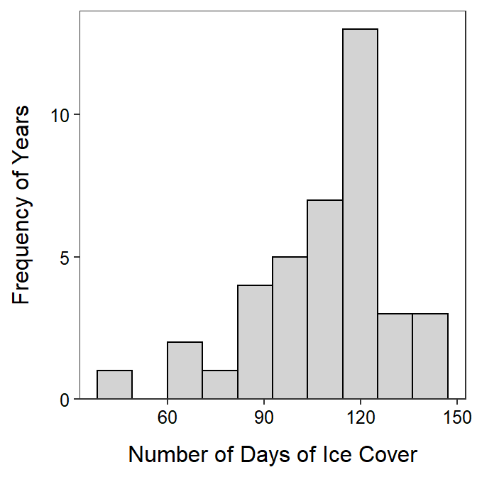

Module 24 Univariate EDA in R
In Module 5 you practiced performing an EDA for quantitative or categorical data using summary statistics and graphics that you practiced calculating by hand in Module 4. In this module, you will learn how to construct those summary statistics and graphics from data using R. You will also be asked to perform the EDA from these results.
Methods in this module require the NCStats package (as always) and the ggplot2 package (for making graphs).
library(NCStats)
library(ggplot2)Data Sets
Summaries for quantitative data will be demonstrated with a dataset of the number of days of ice cover at ice gauge station 9004 in Lake Superior. These data are in LakeSuperiorIce.csv and are loaded into LSI below with the methods described in Section 22.3.1.80
LSI <- read.csv("LakeSuperiorIce.csv")
head(LSI)#R> season decade period temp days
#R> 1 1955 1950 pre-1975 22.94 87
#R> 2 1956 1950 pre-1975 23.02 137
#R> 3 1957 1950 pre-1975 25.68 106
#R> 4 1958 1950 pre-1975 19.96 97
#R> 5 1959 1950 pre-1975 24.80 105
#R> 6 1960 1960 pre-1975 23.98 118Methods for categorical data will use data collected as part of the General Sociological Survey (GSS), which was described in the reading for Module 5. One question that was asked in a recent GSS was “How often do you make a special effort to sort glass or cans or plastic or papers and so on for recycling?” Respondents answered either with “Always,” “Often,” “Sometimes,” “Never,” or “Not Avail.” These data are in GSSEnviroQues.csv and are loaded into GSS below.
GSS <- read.csv("GSSEnviroQues.csv")
head(GSS)#R> recycle tempgen
#R> 1 Always Extremely
#R> 2 Always Extremely
#R> 3 Always Extremely
#R> 4 Always Extremely
#R> 5 Always Extremely
#R> 6 Always Extremely24.1 Quantitative
24.1.1 Summary Statistics
The main summary statistics for quantitative data are the mean, median, standard deviation, IQR, and range, as described in Module 5. These statistics can be computed in R with Summarize(),81 using a one-sided formula of the form ~qvar, where qvar generically represents the quantitative variable. The data frame that contains qvar is included in data=. The number of digits after the decimal place may be controlled with digits=.
Summarize(~days,data=LSI,digits=1)#R> n nvalid mean sd min Q1 median Q3 max
#R> 42.0 39.0 107.8 21.6 48.0 97.0 114.0 118.0 146.0From this it is seen that the sample median is 114 days, sample mean is 107.8 days, sample IQR is from 97 to 118 days, the sample standard deviation is 21.6 days, and the range is from 48 to 146 days. Also note that the overall sample size is 42, though three individuals must have been missing as the “valid n” is only 39.
Use Summarize() to compute summary statistics for a quantitative variable.
Remember the “tilde” (~) when using Summarize().
24.1.2 Histograms
All graphs made with ggplot2 begin with ggplot() using a data= argument that defines the data frame to be used for the graphic. Variables for the x- and y-axes are then declared within aes() as the second argument. A histogram requires only the variable for the x-axis. To this base information, geom_histogram() is “added” to produce a simple default histogram.
ggplot(data=LSI,aes(x=days)) +
geom_histogram()
Only define the x variable for a histogram.
This base histogram is rather ugly. Fortunately it can be improved fairly easily. Most importantly, set bins= to the desired number of bins.82 Additionally, the bin bars can be made more readable by outlining them in black with color="black" and filling then with a light gray with fill="lightgray".
ggplot(data=LSI,aes(x=days)) +
geom_histogram(bins=10,color="black",fill="lightgray")While this histogram is great improved it will look better if the bars are set on the x-axis with scale_y_continuous() shown below,83 the x- and y-axes are labeled more appropriately using x= and y= in labs() as shown below, and we use theme_NCStats(),84 which was created especially for this class.
ggplot(data=LSI,aes(x=days)) +
geom_histogram(bins=10,color="black",fill="lightgray") +
scale_y_continuous(expand=expansion(mult=c(0,0.05))) +
labs(x="Number of Days of Ice Cover",y="Frequency of Years") +
theme_NCStats()
When making your own histogram, copy the code above and change data=, x=, bins=, x=, and y=.
24.2 Quantitative for Multiple Groups
It is common to need to compute numerical or construct graphical summaries of a quantitative variable separately for groups of individuals. In these cases it is beneficial to have a function that will efficiently compute summary statistics and construct a histogram for the quantitative variable separated by the levels of a factor variable.
As an example, the LSI data.frame contains a period variable that indicates whether the ice season was pre-1975 or post-1975 (which included 1975). Thus, one may be interested in examining the distribution of annual days of ice for each of these periods. As period is a categorical variable it is first converted to a factor data type, with the levels controlled to their proper order.
LSI$period <- factor(LSI$period,levels=c("pre-1975","post-1975"))
str(LSI)#R> 'data.frame': 42 obs. of 5 variables:
#R> $ season: int 1955 1956 1957 1958 1959 1960 1961 1962 1963 1964 ...
#R> $ decade: int 1950 1950 1950 1950 1950 1960 1960 1960 1960 1960 ...
#R> $ period: Factor w/ 2 levels "pre-1975","post-1975": 1 1 1 1 1 1 1 1 1 1 ...
#R> $ temp : num 22.9 23 25.7 20 24.8 ...
#R> $ days : int 87 137 106 97 105 118 118 136 91 NA ...24.2.1 Summary Statistics
Summary statistics are separated by group by giving Summarize() a “formula” of the form qvar~cvar, where cvar generically represents the factor variable that indicates to which group the individuals belong.
Summarize(days~period,data=LSI,digits=1)#R> period n nvalid mean sd min Q1 median Q3 max
#R> 1 pre-1975 20 18 109.1 15.6 82 97 110.5 118 137
#R> 2 post-1975 22 21 106.8 26.0 48 99 116.0 123 14624.2.2 Histograms
A histogram can be separated by levels in the cvar variable by “adding” facet_wrap() with ~cvar as its only argument to the general histogram code (as shown above).
ggplot(data=LSI,aes(x=days)) +
geom_histogram(binwidth=15,boundary=0,color="black",fill="lightgray") +
scale_y_continuous(expand=expansion(mult=c(0,0.05))) +
labs(x="Number of Days of Ice Cover",y="Frequency of Years") +
theme_NCStats() +
facet_wrap(~period)24.2.3 Boxplots
Side-by-side modern boxplots can be constructed by first declaring the quantitative variable as y= and the grouping variable as x= in aes() in ggplot() and then adding geom_boxplot(). As shown below, the boxplots may be outlined and filled, proper labels should be added, and course them should be added.
ggplot(data=LSI,aes(x=period,y=days)) +
geom_boxplot(color="black",fill="lightgray") +
labs(x="Period",y="Number of Days of Ice Cover") +
theme_NCStats()
Must declare both x= and y= for a boxplot.
24.3 Categorical Data
24.3.1 Data Manipulation
Methods for summarizing categorical data work best if the categorical variable is recorded as a “factor” variable in R (data types discussed in Section 22.2. Most often the variable will need to be coerced into being a factor variable. For example, the recycle variable in GSS is a character variable by default.
str(GSS)#R> 'data.frame': 3539 obs. of 2 variables:
#R> $ recycle: chr "Always" "Always" "Always" "Always" ...
#R> $ tempgen: chr "Extremely" "Extremely" "Extremely" "Extremely" ...Categorical data can be forced to be a factor data type with factor(). The order of the levels, most importantly for ordinal data, can be controlled by including the ordered level names within a vector given to levels= in factor(). For example, the recycle variable in GSS is forced to be a factor below and its levels are controlled to follow their natural order.
GSS$recycle <- factor(GSS$recycle,
levels=c("Always","Often","Sometimes","Never","Not Avail"))
str(GSS)#R> 'data.frame': 3539 obs. of 2 variables:
#R> $ recycle: Factor w/ 5 levels "Always","Often",..: 1 1 1 1 1 1 1 1 1 1 ...
#R> $ tempgen: chr "Extremely" "Extremely" "Extremely" "Extremely" ...levels(GSS$recycle)#R> [1] "Always" "Often" "Sometimes" "Never" "Not Avail"The names of the levels in the vector given to levels= must be exactly as they appear in the original variable and they must be contained within quotes. Prior to using factor(), include the variable in unique() to see what the names of the levels are.
unique(GSS$recycle)#R> [1] "Always" "Often" "Sometimes" "Never" "Not Avail"Convert categorical data to a factor variable before summarizing.
Use factor() to convert categorical data to a factor variable.
Check the spelling of levels when changing their order.
24.3.2 Frequency and Percentage Tables
A frequency table of a single categorical variable is computed with xtabs(), where the first argument is a one-sided formula of the form ~cvar and the corresponding data frame is in data=. The result from xtabs() should be assigned to an object for further use. For example, the frequency table is produced, stored in tabRecycle, and displayed below.
( tabRecycle <- xtabs(~recycle,data=GSS) )#R> recycle
#R> Always Often Sometimes Never Not Avail
#R> 1289 850 823 448 129A percentage table is computed by including the saved frequency table as the first argument to percTable().85 The number of digits of output is controlled with digits=, though this defaults to 1 which is adequate for most percentages.
percTable(tabRecycle)#R> recycle
#R> Always Often Sometimes Never Not Avail
#R> 36.4 24.0 23.3 12.7 3.6
24.3.3 Bar Charts
A bar chart is constructed by declaring only the categorical variable as x= within aes() of ggplot() and then adding geom_bar(). As shown below, the outline and fill colors of the bars may be set, the bars should be set on the x-axis as with the histograms, the axes should be properly labeled, and the course theme should be used.
ggplot(data=GSS,aes(x=recycle)) +
geom_bar(color="black",fill="lightgray") +
scale_y_continuous(expand=expansion(mult=c(0,0.05))) +
labs(x="Respondent's Response",y="Frequency of Respondents") +
theme_NCStats()
When making your own bar chart, copy the code above and change data=, x=, and y=.
Data originally from the National Snow and Ice Data Center.↩︎
Summarize()is fromNCStats.↩︎Generally near 8-10 bins, depending on n.↩︎
A full description of this code is beyond this class, but this exact code should be used for all histograms constructed for this class.↩︎
This theme mostly removes the background grid and color.↩︎
Thus,
xtabs()must be completed and saved to an object beforepercTable().↩︎